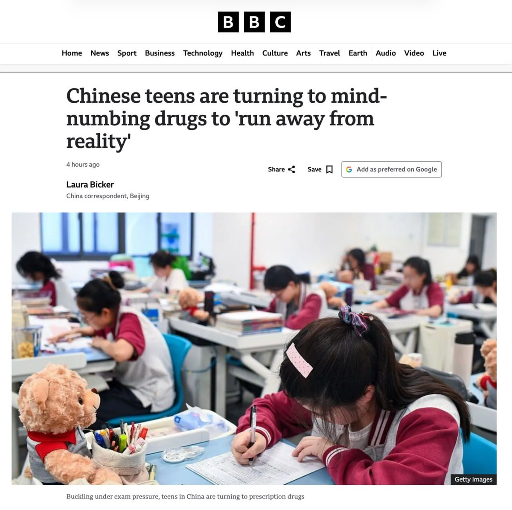
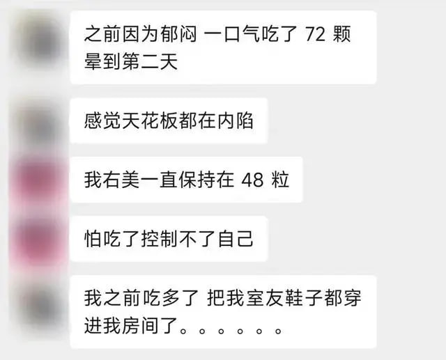
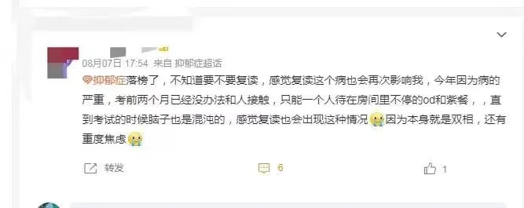

x-square「公子」様
@xx1012000456
@whyyoutouzhele 我们od圈已经火到BBC了！？



李老师不是你老师
@whyyoutouzhele
“不被听见的孩子选择了嗑药”
8月26日，BBC发表长篇调查报道，中国青少年正面临日益严峻的处方药滥用危机。受升学压力驱使，越来越多的青少年通过网络渠道购买止咳药、镇痛药、癫痫药等处方药物，以追求麻木感来逃避现实。 https://t.co/EkZ4xoYyAX